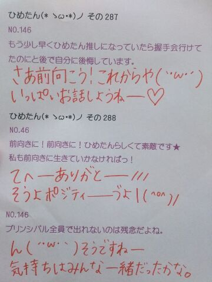

| 2013/07 18 Thu | ひめたん(*>ω<*)そ の315 |

前髪切ってもらったよー
そんで少なくなったよー
ろってぃーだよー
乃木どこ告知忘れてた☆
ごっめんねー(´・ω・｀)
おともだちで録画してる方いらっしゃったら
みせてもらったらいいかもしれなーい
うちくるー？
とかゆってーうふー
あ、ほらー
一昨日はNOGIBINGO、
昨日は乃木どこ収録させてもらったから
よかったらみてね＊
オンエア近くなったら
きっと、きっと告知するね笑
あ、朝日新聞！
ほら今みたらひめたんの記事よ＼(ω)／
さてーみなさん
ひめたんは暑いの苦手なので
もうー夏バテっておりまっすっ
出かける前はシャワー浴びないと
体のスイッチが入りませんー
困ったねー
なんかいい方法ありますかねー
トマト食べたらいいよーとかやめてねー
青魚とかよさそうだな。
でもねサーモンとかしか好きじゃないのよ
今週末は京都全握ですねーっと
セトリは前回とちょっと違うので多分、
だから楽しみにしててください( ^ω^ )
きっと屋内でも暑いからねー
暑さ対策はしっかりお願いしますよみなさーん
ひめたんは前回は
メイクさんが首に冷えピタ貼ってくれたよ！
酸っぱいの苦手なひめたんが
グレープフルーツジュース飲みたくなる
ああ夏だね(´・ω・｀)
学生さんは
もうちょっとで夏休みでしょうか
頑張りまっしょー

 今までのメンバーの個人PVの中で、
今までのメンバーの個人PVの中で、
やってみたいと思ったやつはあるカナ？
まいやんがテディベアのお店行ってたので
いきたーい(〃ω〃)
いくちゃんの尾道も行きたい！
今年の夏ひめたん流の
夏バテ対策法とかありますか？
もうすでにバテてるけどねー笑
あ！
お風呂入るときに「暖房」つけるの
あがったあとで冷房きいたお部屋入ると
体がスッキリするよー∩^ω^∩
 CDとかDVDはどれくらい持ってる？
CDとかDVDはどれくらい持ってる？
乃木坂のCDとかなら
棚一段分ずらーだけどね
ほかはあんま持ってないかも(´・ω・｀)
何か楽器できたりするのかな？
ソプラノリコーダー、篠笛、
ピアノは６年間やったのちに
両手で引けなくてやめましたー
どんぐり王国にはいったことありますか？
もちろーん！
くまのがっこう好きって言ってたけど
LINEのブラウン(くまちゃん)と
どっちがすき(*´ω｀*)？
断然ジャッキーです(笑)
ブラウンごめんねー☆
ひめたんってネイルやったりするー？
やってないー(´・ω・｀)
興味はあるよ！
『ひめたさんの一日』という遊びをするなら
何をして何して何しますか？
だるまさん的なあれだよね？
そーだなーひたすらびーむでも
飛ばそうかな。
ひめたんは夏の男性の服装は
ポロシャツとTシャツ、どっちが好みですか？
えーどっちだろうー
どちらも爽やかで良いと思いますよ(*´ω`*)
ひめたんびーむを受けたら
照れちゃって、しーんってなっちゃう
って方もいらっしゃった！
そーゆーことだったのか///

夏休みの宿題
手伝ってくれるひと募る！
(＊´・ω・＊)
コメント(215)
2013/07/18 18:00